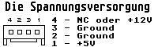

Previous
Next
TOC
C301371-101
= Floppy Drive 1.44MB (
Epson SMD-340-139-01)
MegaSTE/TT030
Jumpertable: * * * * * *-* *
|
*-* * * * * * *
C303073-001
= Floppy Drive 1.44MB (
Epson SMD-340-601-04)
Falcon030
Jumpertable: * * * * * *-* *
|
*-* * * * * * *
= Floppy Drive 1.44MB (
Epson SMD-340-135-06)
Jumpertable: * * * * * *-* *
(Austauschtyp nicht
|
von ATARI ab Werk!)
*-* * * * * * *
Im normalen Handel
erhältlich!
Achtung:
Das Laufwerk SMD-300/SMD-340 ist durch den Typ SMD-1300/SMD-1340
abgelöst worden, die Erklärung der Einzelheiten finden Sie auf der
nächsten Seite!
FÜR ALLE EPSON SMD-340 LAUFWERKE GILT:
Die entsprechenden Felder sind auf meinem Datenblatt mit Nummern
anstelle von Buchstaben gekennzeichnet: links unten (die Seite,
wo der Spannungsanschluß ist) ist 1, darüber liegt 9, Rechts un-
ten (Seite, auf welcher der Shugart-Bus ist) ist 8, darüber liegt
16. Also etwa so:
______
9
16
______________________
|....|
........
|
|
------
........
|
|
1
8
----------------------
Jetzt gelten folgende Zuordnungen:

14-15 Drive select 0
15-16 Drive select 1
6- 7 Drive select 2
7- 8 Drive select 3
4- 5 DD/HD-Umschaltung über den internen Laufwerkssensor
5-13 DD/HD-Umschaltung über Pin2 (VOM Controller ZUM Laufwerk!)
1- 2 1,44 MB Modus bei HIGH-Pegel am PIN 2
2- 3 1,44 MB Modus bei LOW-Pegel am PIN 2
1- 8 Grounding
9-
Grounding
10+11 Test-Terminal (differentiated signal output terminal)
12 Test-Terminal (terminal for factory drive adjustment)
Die
Epson SMD340 gibt KEIN HD-OUT Signal von
sich dies ist NUR beim Betrieb an alten Computern mit einem nach-
gerüsteten HD-Modul von Wichtigkeit, NICHT jedoch am, MegaSTE bzw.
am TT030 und Falcon030)!
Abhilfe: Das Laufwerk öffnen (nur 1 Schraube und das Laufwerk aus
dem Blechmantel ziehen). So drehen daß man nun auf die Platine
schaut mit dem Diskettenschlitz zum Körper:
weiterblättern
Kapitel Die Diskettenlaufwerke des ATARI, Seite 3